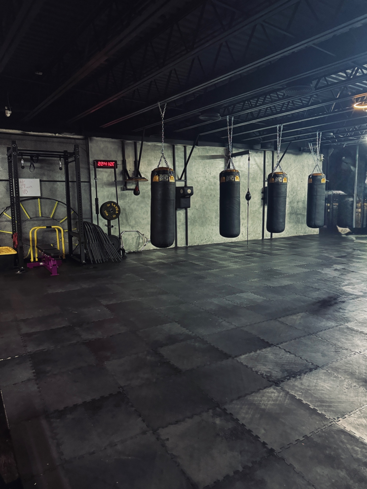
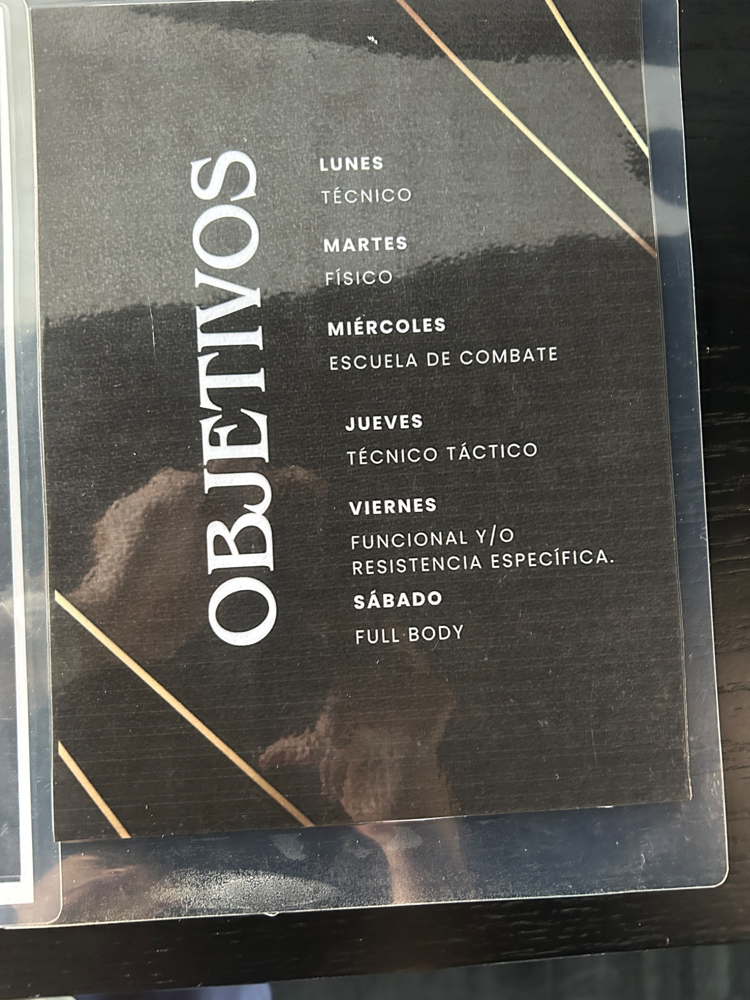
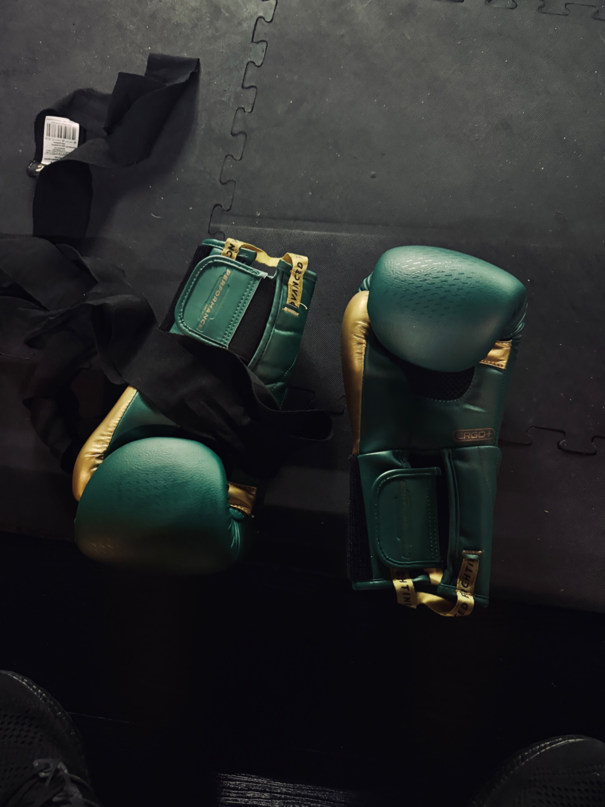
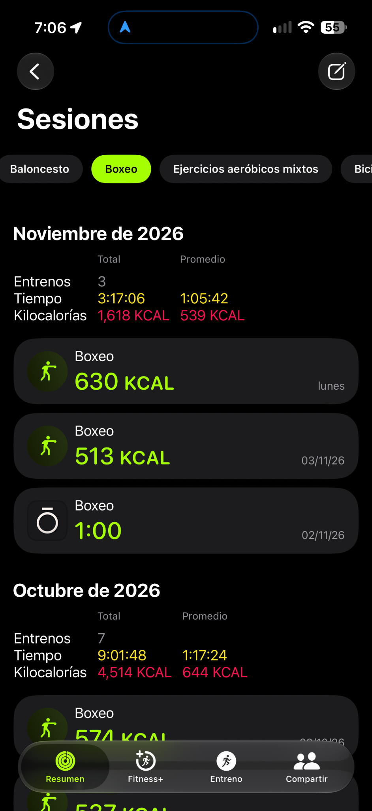

Técnica
Guardia, jab, cross, golpes al cuerpo, uppercuts, combinaciones, desplazamientos, defensa y esquives.
A · Actividad · Completado
Empecé prácticamente desde cero. Durante el semestre aprendí técnica, mejoré mi coordinación y descubrí que entrenar también podía convertirse en una forma de manejar presión, despejarme y volver con más energía.

Estas cifras incluyen únicamente entrenamientos registrados en Apple Fitness. Hubo algunas sesiones —incluida mi clase de prueba del 7 de agosto— que no quedaron registradas.
Planeación
Había hecho ejercicios de box siguiendo videos durante la pandemia, pero nunca había entrenado con saco, coaches ni una estructura técnica. Mi objetivo fue aprender desde la base mientras recuperaba condición física y hacía del ejercicio una parte constante de mi semana.
Guardia, jab, cross, golpes al cuerpo, uppercuts, combinaciones, desplazamientos, defensa y esquives.
Cuerda, sombra, lagartijas, resistencia, trabajo funcional y sesiones intensas de saco.
Aprender a mover pies y manos con intención, mantener balance y ejecutar combinaciones bajo cansancio.
Integrar el entrenamiento a una semana con IB, tutorías, ICO y otras responsabilidades.
Estructura real del gimnasio


Del inicio al hábito
Empecé usando guantes prestados. Después de unas semanas decidí comprar mis propios guantes y aprendí a vendarme solo. Puede parecer un detalle pequeño, pero para mí marcó el momento en que box dejó de sentirse como algo que estaba “probando” y empezó a formar parte de mi rutina.
También empecé a pedir feedback constantemente. Luca y León me corrigieron desde cómo colocar los pies y extender un golpe hasta la técnica del vendaje. Aprendí que mejorar requería preguntar, escuchar y aceptar que iba a equivocarme muchas veces.
Reflexión
Una de las partes más exigentes fue pensar mientras ya estaba cansado: recordar combinaciones, cuidar la técnica y seguir respondiendo bajo presión física y mental.
Desafío técnico
Después de cuerda, sombra, lagartijas y otros ejercicios llegaba al saco físicamente cansado. Ahí el coach podía dar una combinación larga y tenía que recordarla, ejecutarla y mantener la técnica. A veces preguntaba de nuevo al coach o al compañero de al lado. Eso me hizo notar cuánto cambia mi capacidad de pensar cuando estoy bajo presión.
Área de mejora
Aprendí mucho de golpes y desplazamientos, pero esquivar y defenderme siguen siendo de las partes que más me cuestan. En vez de verlo como “ya sé box”, terminé el semestre entendiendo mejor todo lo que todavía me falta desarrollar.
Cambio observable
Al inicio sabía reconocer algunos golpes, pero prácticamente empezaba desde cero. Al terminar ya podía vendarme, moverme frente al saco, encadenar golpes, trabajar con cuerda y aplicar correcciones de guardia, balance y posición. También recuperé condición física y tolerancia a sesiones cada vez más demandantes.
Cómo me sentí
Hubo días en los que no quería ir y aun así fui. Varias veces salí más contento y con más energía de la que tenía al entrar. En otros momentos el cansancio, exámenes o una mala administración del tiempo hicieron que no fuera. Eso volvió la experiencia mucho más real: no fue una línea perfecta de progreso.
Lo que muestran los datos
Los datos no reemplazan mi reflexión, pero ayudan a contrastarla. Octubre fue claramente mi periodo más constante; noviembre muestra una caída real en entrenamiento justo cuando empecé a sentir más dificultad para equilibrar escuela, sueño y otras responsabilidades.
Octubre coincidió con un momento en el que ya estaba más adaptado al semestre, tenía más motivación y aparentemente una carga más manejable. No puedo afirmar una sola causa, pero sí reconocer que la diferencia fue grande.

Oura Ring · Octubre vs. noviembre
Yo percibí noviembre como un periodo de peor descanso y más cansancio. Oura no muestra que haya dormido menos: de hecho, mi sueño total promedio subió. Lo que sí bajó fue mi puntuación de actividad, y hubo pequeñas caídas en puntuación de sueño, disposición y regularidad. Por eso prefiero hablar de menor constancia y peor organización, no afirmar que el box “causó” o “arregló” mi sueño.
La enseñanza más importante
Durante IB es fácil pensar que una hora de ejercicio es una hora que debería estar usando para estudiar. Mi experiencia fue casi la contraria: box se convirtió en un espacio donde podía sacar estrés, moverme y desconectarme de la escuela por un rato.
En varios entrenamientos llegué cansado o sin ganas y salí con más energía. Cuando durante el tercer parcial empecé a descuidar el ejercicio, también sentí más cansancio, peor organización y menos equilibrio. No puedo decir que una cosa haya causado la otra, pero sí aprendí que necesito proteger tiempo para moverme en vez de tratar al ejercicio como lo primero que se elimina cuando estoy ocupado.
Si volviera a empezar
El problema no fue no tener suficientes métricas; fue no tener un sistema simple desde el inicio para comparar mi progreso técnico y proteger mejor la constancia.
Resultados de aprendizaje CAS
Marco únicamente los resultados que puedo defender con evidencia real de esta experiencia.
Identifiqué progreso en coordinación, técnica, resistencia y disposición para pedir feedback, pero también áreas claras de mejora en defensa, esquives, constancia y administración del tiempo.
Aprendí habilidades nuevas de box desde la base y tuve que ejecutar técnica y recordar combinaciones mientras estaba físicamente cansado y mentalmente bajo presión.
Elegí una actividad nueva, definí el objetivo de aprender box y mejorar mi condición, integré clases estructuradas durante el semestre y después utilicé registros reales para evaluar el proceso.
La constancia no fue perfecta. Precisamente por eso el resultado es relevante: seguí regresando, entrené durante cuatro meses y terminé identificando qué necesito cambiar para sostener el ejercicio cuando aumenta mi carga académica.
Actividad · Box · Semestre 1
La siguiente meta no es simplemente entrenar “más”. Es entrenar con mayor constancia, seguir corrigiendo técnica y preparar con responsabilidad una siguiente etapa: el sparring.
← Volver a Semestre 1